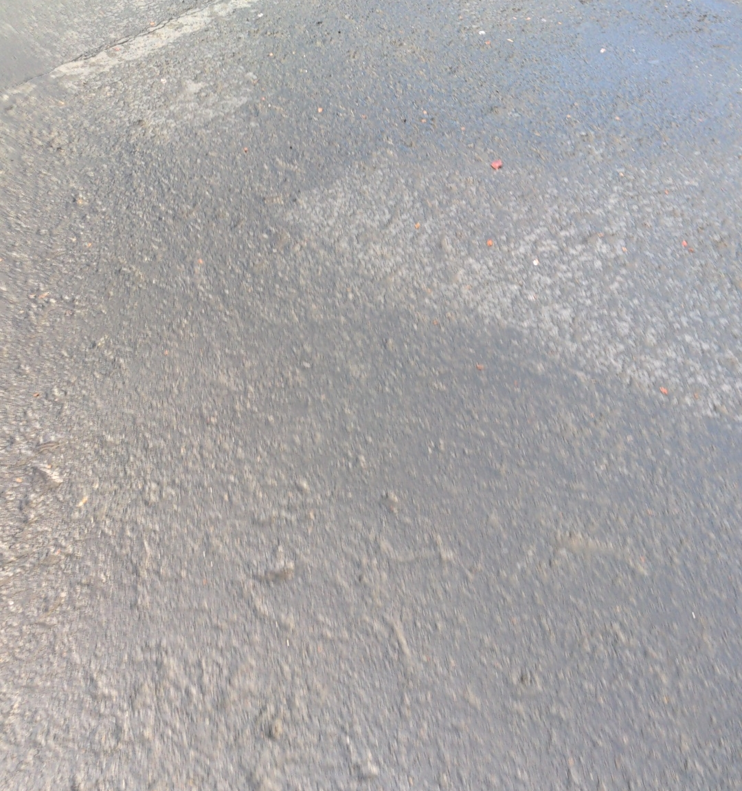

One of the very important steps of creating a successful website is deciding on a color palate. As we learned in class, colors elicit emotional responses and my intention with this color scheme was to create a page of moderninity and modestness. Dull, monochromatic, and simplistic was my motivation for pulling colors from a relatively boring photo.
